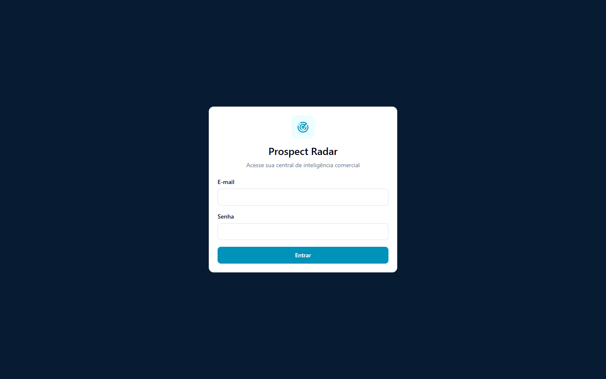
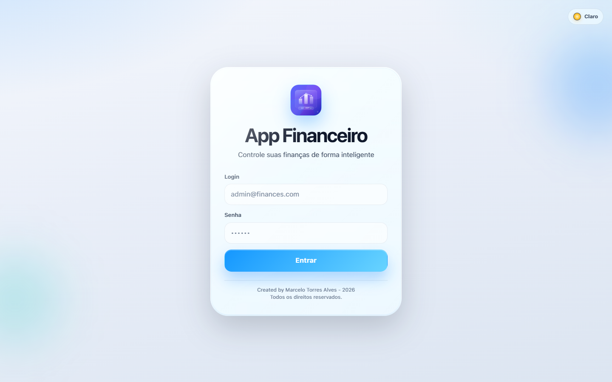
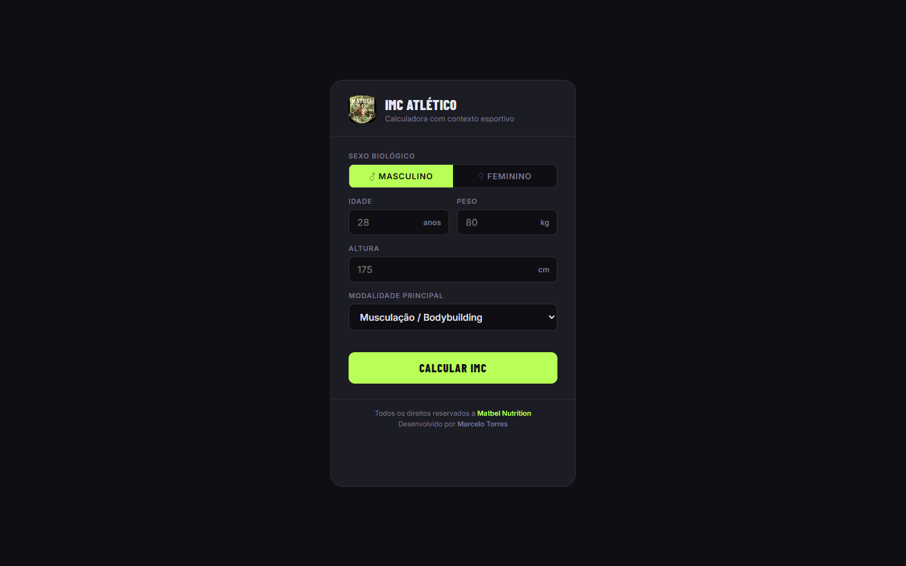
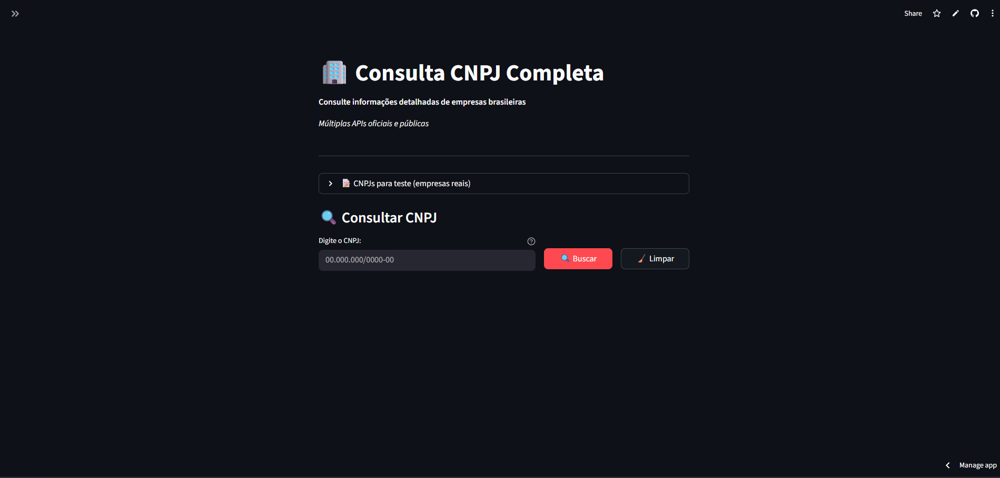

01
Plataforma B2B · Projeto principal
Prospect Radar
Pesquisa, qualificação e priorização de empresas para tornar a prospecção comercial mais inteligente e objetiva.
Desenvolvedor Full Stack de Porto Alegre. Construo aplicações web claras, confiáveis e prontas para resolver problemas reais.
Trabalhos selecionados
Uma seleção de produtos que unem estratégia, código e atenção aos detalhes.

Plataforma B2B · Projeto principal
Pesquisa, qualificação e priorização de empresas para tornar a prospecção comercial mais inteligente e objetiva.

Finanças pessoais
Experiência web para organizar e visualizar a vida financeira com simplicidade.

Saúde e performance
Calculadora de IMC que considera o contexto esportivo em uma interface direta e responsiva.

Dados empresariais
Consulta consolidada de informações de empresas brasileiras com fallback entre múltiplas APIs públicas.
Sobre mim
Sou desenvolvedor Full Stack, de Porto Alegre, e gosto de transformar problemas de negócio em experiências digitais simples, úteis e bem construídas.
Atuo do front-end ao banco de dados, combinando desenvolvimento web, automações e inteligência artificial para entregar produtos que realmente funcionam.
Tem uma ideia?
Estou aberto a novos desafios, colaborações e conversas sobre tecnologia.
Iniciar uma conversa